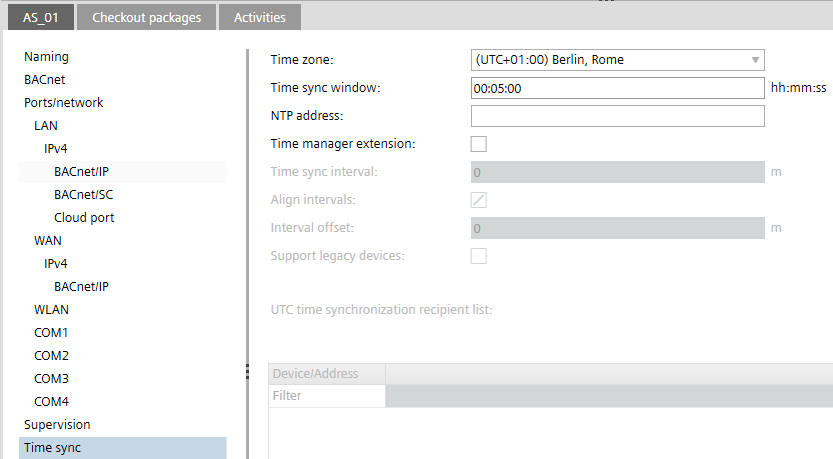
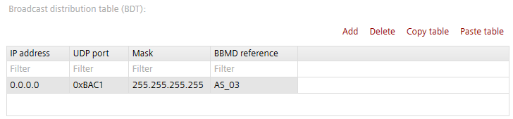
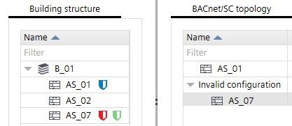
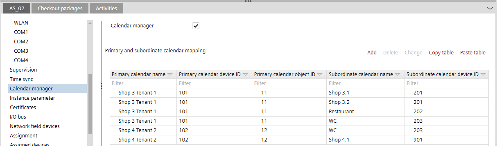
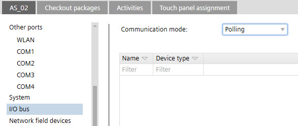
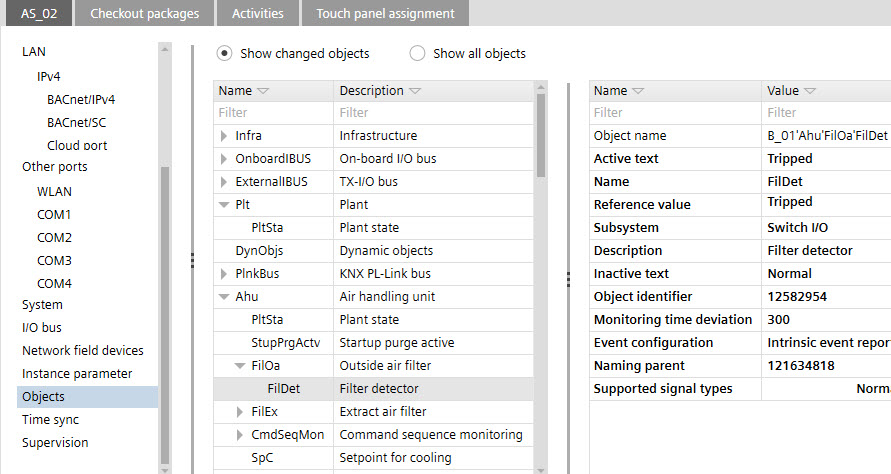

设备版本≥1.6的详细信息面板
设备详细信息窗格具有以下选项卡：
- Device details
- Checkout packages
- Activities
- Touch panel assignment

Details tab > Naming
您可以定义默认设备名称前缀，以及设备描述Settings > Address defaults > BACnet.
Address defaults
环境 | 描述 |
|---|---|
姓名 | 设备名称。 |
描述 | 设备的描述。 |
地点 | 设备的位置信息。位置信息由父建筑元素名称组成，例如B_1'Flr_2。 |
Equipment ID | 设备外壳的设备名称。 |
Details tab > BACnet
您可以在中定义默认的 BACnet 设置Settings > Address defaults > BACnet.
Address defaults

当应用程序模板或 ABT Pro 项目已创建时，手动输入或更改设备实例编号值和设备实例编号范围可能会导致设备实例编号重复。确保输入的值准确。
您可以检查重复的设备实例编号Building > Device list.
Checking for duplicate device properties
环境 | 描述 |
|---|---|
对象名称 | 设备名称。 |
设备实例编号 | 与 BACnet 设备关联的设备序列号（设备实例号）。 |
APDU retries | 指定 APDU（应用协议数据单元）传输失败时的重试次数。 |
APDU 段超时 | 指定在多个段中发送 APDU 时的超时值（以毫秒为单位），范围为 1000 到 10000。 |
APDU timeout | 指定当 APDU 可以在一次传输中发送时，从 1000 到 10000 的超时值（以毫秒为单位） |
| Object hierarchy defined for the device that can be changed.
该对象层次结构定义项目设置中列出的项目。Building > Settings > Device defaults. |
 BACnet 上的对象结构
BACnet 上的对象结构 Does not create the structure view object (object-type 29) in the export file.
Does not create the structure view object (object-type 29) in the export file.
Details tab > Ports/network
显示下面所有寄存器的总体状态Ports/network选项卡。根据项目结构，以太网端口可以以不同的方式使用。
Flexible use of Ethernet ports
Details tab > Ports/network > LAN
显示寄存器的总体状态（enable/disable）：
- IPv4
- BACnet/IP
- BACnet/SC
- Cloud port
环境 | 描述 |
|---|---|
以太网端口状态 | 显示设备当前的端口状态。要使信息可见，请上传device configuration必须执行。 PXC7 PXC5 and PXC4E DXR2 app type and PXC3 DXR2 from ABT Pro (including MS/TP types) |


Details tab > Ports/network > LAN > IPv4
环境 | 描述 |
|---|---|
主机名 | 设备的专用主机名。 |
网络访问 | 确定 Web 接口端口的 HTTP 连接设置。 HTTP 使用端口 80。HTTPS 使用端口 443。
|
| 如果选择，DHCP（动态主机配置协议）用于自动配置设备端口。清除复选框以手动输入 IP 地址值。 Note：活动 DHCP 设置不支持 BBMD。 |
| IP 设备的地址。 |
| 指定较大网络中的子网。 |
| 指定 TCP/IP 网络上充当另一个网络的访问点的节点。 |
| 首选域名服务器的地址。 |
| 备用域名服务器的地址。 |
| 域的名称，例如 siemens.net。 |
以太网 MAC 地址 | 显示分配设备后的 MAC 地址（首次在线）。 |
Details tab > Ports/network > LAN > IPv4 > BACnet/IP
必须遵守 WAN 网络的以下唯一性：
- IP 网络号：LAN 和 WAN 端口必须具有不同的 IP 网络号。
- IP subnets: LAN and WAN port must have different IP subnets.
- 本地广播UDP端口号：LAN和WAN端口必须具有不同的本地广播UDP端口号。
环境 | 描述 |
|---|---|
|
|
UDP port | 根据从 BAC0 到 BAD4 的工具首选项，以十六进制格式或十进制指定 UDP 端口。 |
网络号 | 标识 BACnet 网络的数字。 |
本地广播UDP端口 | 用于本地广播设置的 UDP 端口（默认 0xBB02 = 47874）。本地广播 UDP 用于不由 BBMD 路由的消息，例如分组命令。 Note： 这UDP port数量和Local broadcast UDP port数字不能相同：Local broadcast UDP port在网络上必须是唯一的。如果两个端口使用相同的 UDP 端口号，ABT 站点不会保存配置。 |
| BACnet 路由允许在自动化站内部的 BACnet/IP 和 BACnet/SC、BACnet/MSTP 之间进行路由。网络中只能激活一个启用了 BACnet 路由的 BACnet/SC 集线器。 |
APDU length | 指定此 BACnet 网络的 APDU 长度（以字节为单位）。以下值可用：
|
| ABT 站点支持使用 BACnet/IP 广播管理设备 (BBMD)。 选择以将设备启用为 BBMD 设备。启用后，它会在建筑结构表中的设备旁边指示。 Note：如果您的 BACnet 设备通过 IP 路由器互连，则广播消息将被 IP 路由器阻止。 BBMDs 的主要目的是重新分发 BACnet 发现所需的广播消息。 Note： BBMD 不支持活动 DHCP 设置Ports / network > LAN > IPv4选项卡。 |
| 允许设备向 BBMD 注册，加入 BACnet/IP 网络，并将其广播消息发送到 BBMD。 |
Broadcast distribution table (BDT)

柱子 | 描述 |
|---|---|
IP address | IP 设备的地址。 |
UDP port | 下拉列表。以十六进制格式指定从 BAC0 到 BAD4 的 UDP 端口。默认值为 BAC0。 |
面具 | 广播分发掩码。默认值为 255.255.255.255。指示如何在 IP 子网上分发广播消息。 |
BBMD reference | BACnet 设备的参考名称。该名称与设备的项目名称相对应。不适用于第 3 方设备。 |
命令 | 描述 |
|---|---|
添加 | 打开一个窗口，您可以在其中输入 IP 地址、掩码和 UDP 添加设备。 |
删除 | 从广播分发表 (BDT) 中删除选定的设备。 |
复制表 | 复制表内容。 |
粘贴表 | 粘贴表格内容。 |
Details tab > Ports/network > LAN > IPv4 > BACnet/SC
在设备详细信息中设置 BACnet/SC 节点或集线器时，默认的 UDP 端口和 IP 网络号将应用于该设备。您可以为 BACnet/SC 节点和集线器设置默认 UDP 端口和 IP 网络号Settings > Address defaults > BACnet/SC.
Address defaults
环境 | 描述 |
|---|---|
BACnet/SC | 定义 BACnet/SC 网络中设备的功能。 Disabled Node Hub Failover hub |
SC 网络号 | 在专用网络或互联网上的另一个网络中分配 BACnet/SC 网络号。 |
主要枢纽 | 对于定义为节点的设备：将设备分配给主集线器。 |
故障转移中心 | 对于定义为节点的设备：将设备分配给故障转移集线器（可选）。 |
连接超时 | 显示连接到 BACnet/SC 网络时节点收到确认消息之前的时间 [s]。 默认值：10。 |
断开连接超时 | 显示在断开与 BACnet/SC 网络的连接时节点收到确认消息之前的时间 [s]。 默认值：10。 |
分钟。重新连接超时 | 分钟。关闭或失去与 BACnet/SC 集线器的连接后重新连接之前的时间 [s]。 默认值：30。 |
启动心跳超时 | 最大限度。当与 BACnet/SC 集线器的连接中没有消息时，节点触发心跳请求消息之前的时间 [s]。 默认值：30。 |
接受的集线器连接数 | 最大限度。来自其他 BACnet/SC 节点的已接受集线器连接数量（仅适用于 hub/failover 集线器）。 |
集线器侦听器端口 (TCP) | 服务器用于 BACnet/SC 集线器功能的 Web 套接字的 TCP 端口（仅适用于 hub/failover 集线器）。 |
反向代理 | 尚不支持该功能（仅适用于 hub/failover hub）。 |
TLS mode | 指示如何为传入集线器连接选择 TLS 协议版本。目前支持的 TLS 协议版本为 1.2、1.3 或灵活（节点将根据其在 1.2 和 1.3 之间的偏好进行连接，适用于 3rd党的整合）。 |
| 如果该复选框已激活 Note：如果在此手动激活该复选框，将显示无效连接。连接必须始终通过从Building structure到BACnet/SC topology.  |
| 在专用网络或互联网上的另一个网络中分配 BACnet/SC 网络号。 |
| 对于定义为集线器的设备：将设备分配给楼宇集线器。 |
| 对于定义为集线器的设备：将设备分配给故障转移集线器（可选）。 |
| 显示连接到 BACnet/SC 网络时节点收到确认消息之前的时间 [s]。 默认值：10。 |
| 显示在断开与 BACnet/SC 网络的连接时节点收到确认消息之前的时间 [s]。 默认值：10。 |
| 分钟。关闭或失去与 BACnet/SC 集线器的连接后重新连接之前的时间 [s]。 默认值：30。 |
| 最大限度。当与 BACnet/SC 集线器的连接中没有消息时，节点触发心跳请求消息之前的时间 [s]。 默认值：30。 |
Details tab > Ports/network > LAN > IPv4 > Cloud port
配置设备的云连接设置。启用云端口时，ABT站点使用在中配置的默认云值Settings > Address defaults > Cloud.
财产 | 描述 |
|---|---|
| 选择通过enable-connectivity BACnet 属性启用云端口。如果启用，如果互联网可用，设备将自动连接。 Note：必须运行云网关应用程序才能获得正确的连接。 |
| 选择通过enable-BACnet-tunnel BACnet 属性禁用BACnet 隧道。它用于 ABT 站点远程工程。打开设备、云和 ABT 站点之间的连接。 验证与 Web 界面的连接Object view > Device > Infrastructure > Network port for cloud. |
重新连接延迟 | 设置重新连接延迟时间（以秒为单位）。 |
重试尝试 | 设置连接丢失时云对象的重试次数。 |
网络号 | 只读。 BACnet 属性指示 BACnet 网络号。 |
注册 URI | 只读。 BACnet 属性，其中包括云代理用于在云中注册设备的云注册 URI。 https://bootstrap.connectivity.siemens.com |
激活密钥 | 第一次读回后密钥可见。 使用Copy to clipboard按钮复制激活密钥并将其粘贴到设备应用程序中。 有关如何管理云端站点和设备的更多信息，请参阅《设备用户指南》（A6V12060067）。 https://www.siemens.com/download?A6V12060067 有关加入自动化站的更多信息，请参阅 Desigo 工程工具访问文档 (A6V12096474)。 |
Details tab > Ports/network > WAN
显示寄存器的总体状态（enable/disable）：
- IPv4
- BACnet/IP
根据项目结构，以太网端口可以以不同的方式使用。
Flexible use of Ethernet ports
NOTICE

WAN port does not support BACnet/SC connections
使用 LAN 端口操作 BACnet/SC. WAN 端口不支持 BACnet/SC 并存在将 LAN 端口暴露为不安全的风险（因为 BACnet/IP 不是安全协议）。
根据您的场景，使用北向和南向术语时，可能意味着南向接口可以对应 WAN 端口（不支持 BACnet/SC 支持），而北向接口可以对应 LAN 端口。
环境 | 描述 |
|---|---|
以太网端口状态 | 显示设备当前的端口状态。要使信息可见，请上传device configuration必须执行。 PXC7 PXC5 and PXC4E DXR2 app type and PXC3 DXR2 from ABT Pro (including MS/TP types) |
Details tab > Ports/network > WAN > IPv4
环境 | 描述 |
|---|---|
主机名 | 设备的专用主机名。 |
| 如果选择，DHCP（动态主机配置协议）用于自动配置设备端口。清除复选框以手动输入 IP 地址值。 Note：活动 DHCP 设置不支持 BBMD。 |
| IP 设备的地址。 |
| 指定较大网络中的子网。 |
| 指定 TCP/IP 网络上充当另一个网络的访问点的节点。 |
| 首选域名服务器的地址。 |
| 备用域名服务器的地址。 |
| 域的名称，例如 siemens.net。 |
以太网 MAC 地址 | 显示分配设备后的 MAC 地址（首次在线）。 |
Details tab > Ports/network > WAN > IPv4 > BACnet/IP
环境 | 描述 |
|---|---|
|
|
UDP port | 根据从 BAC0 到 BAD4 的工具首选项，以十六进制格式或十进制指定 UDP 端口。 |
网络号 | 标识 BACnet 网络的数字。 |
本地广播UDP端口 | 用于本地广播设置的 UDP 端口（默认 0xBB02 = 47874）。本地广播 UDP 用于不由 BBMD 路由的消息，例如分组命令。 Note： 这UDP port数量和Local broadcast UDP port数字不能相同：Local broadcast UDP port在网络上必须是唯一的。如果两个端口使用相同的 UDP 端口号，ABT 站点不会保存配置。 |
| BACnet 路由允许在自动化站内部的 BACnet/IP 和 BACnet/SC、BACnet/MSTP 之间进行路由。应仅在 BACnet/SC 集线器上激活它。 |
APDU length | 指定此 BACnet 网络的 APDU 长度（以字节为单位）。以下值可用：
|
| ABT 站点支持使用 BACnet/IP 广播管理设备 (BBMD)。 选择以将设备启用为 BBMD 设备。启用后，它会在建筑结构表中的设备旁边指示。 Note：如果您的 BACnet 设备通过 IP 路由器互连，则广播消息将被 IP 路由器阻止。 BBMDs 的主要目的是重新分发 BACnet 发现所需的广播消息。 Note： BBMD 不支持活动 DHCP 设置Ports / network > LAN > IPv4选项卡。 |
| 允许设备向 BBMD 注册，加入 BACnet/IP 网络，并将其广播消息发送到 BBMD。 |
Broadcast distribution table (BDT)
柱子 | 描述 |
|---|---|
IP address | IP 设备的地址。 |
UDP port | 下拉列表。以十六进制格式指定从 BAC0 到 BAD4 的 UDP 端口。默认值为 BAC0。 |
面具 | 广播分发掩码。默认值为 255.255.255.255。指示如何在 IP 子网上分发广播消息。 |
BBMD reference | BACnet 设备的参考名称。该名称与设备的项目名称相对应。不适用于第 3 方设备。 |
命令 | 描述 |
|---|---|
添加 | 打开一个窗口，您可以在其中输入 IP 地址、掩码和 UDP 添加设备。 |
删除 | 从广播分发表 (BDT) 中删除选定的设备。 |
复制表 | 复制表内容。 |
粘贴表 | 粘贴表格内容。 |
Details tab > Ports/network
显示寄存器的总体状态：
- WLAN
- COM 1 – COM4
Details tab > Ports/network > WLAN
ABT 站点允许与具有内置无线接入点的设备进行无线连接。
设备上存在 WLAN 超时。闲置 15 分钟后，设备的无线接入点将关闭。要手动重新启用设备上的 WLAN，请按服务按钮。
确保在工程过程中更改设备的默认无线密码（通常是序列号）。设备设置的任何更改都需要设备满载。或者，您可以在使用 play/pause 函数进行增量下载后激活 Web 界面中的设置。
Configure and download
Using play/pause function
创建设备时，将使用这些默认项目设置。稍后阶段对项目设置的修改不会影响现有设备。您可以分别为每个设备设置 WLAN 设置。要更改默认项目设置，请转至Settings > Address defaults > WLAN.
Address defaults
财产 | 描述 |
|---|---|
| 选择通过停止服务 BACnet 属性启用 WLAN 端口。 |
SSID | 输入设备的 WLAN 端口使用的 SSID。最大限度。 32 个字符。或者，单击Set to factory settings从设备出厂设置中获取值。 |
密码 | 输入设备的 WLAN 端口使用的密码。最大限度。 63 个字符。 要将密码设置为出厂设置，请选择Device default从SSID选项列表并确认Set to factory settings。要查看默认出厂设置，请扫描设备上的 QR 代码。 QR code information: WIFI:S:PXC4.E16_0000550;T:WPA;P:1400052738;; 手动确定：使用 Date/Series/SN 块中的信息： |
渠道 | 设置设备的 WLAN 端口使用的通道。 |
Details tab > Ports/network > COM1 – COM4
您可以在中定义默认的 MS/TP 设置Settings > Address defaults > MS/TP.
Address defaults
ABT 站点支持 MS/TP 路由。您可以在此处配置 MS/TP 管理器端口属性。启用 COM 端口时，ABT 站点使用在中配置的默认 MS/TP 值Settings > Address defaults > MS/TP.
Address defaults
启用 MS/TP 路由时，您需要在设备的 IP 区域中配置有效的网络号（Details tab > Ports / network / LAN > IPv4 > BACnet/IP > Network number).
环境 | 描述 |
|---|---|
网络 | 选择 MS/TP 使端口处于活动状态。 |
波特率 | 指定数据发送到总线的速率。 |
网络号 | 标识网络的编号。 |
自动寻址 | 启用后，会自动获取 MAC 地址设置。 |
MAC Address | MAC 设备的地址。 |
最大限度。经理地址 | 设置Max manager address以防止将令牌传递到位于管理器之后未使用的 MAC 地址。 |
最大限度。信息框 | 向其他设备请求信息的最大数量。 |
APDU length | 指定此 BACnet 网络的 APDU 长度（以字节为单位）。以下值可用：
|
启用大框架 | 扩展路由器 MS/TP 中继中的帧长度。 |
''Enable large frames" checkbox is applicable in MS/TP property of PXC5, PXC7, PXC4.M & DXR2.M devices only.
Details tab > Supervision
监控器是站点中的一个或多个专用设备，用于检查 BACnet 设备的可达性（寿命检查）。如果在生命检查期间无法访问设备，则会向收件人发送一条消息。
受监控设备表包含设备实例号和设备名称。该名称不适用于 3rd派对设备。西门子传统设备（例如 Desigo Xworks）也被视为 3rd派对设备。
当您将设备添加到受监管设备表时，会出现一个图标 添加到监控设备旁边。
添加到监控设备旁边。
定义为监管设备的设备可以被另一个监管设备监控。这意味着建筑物中的所有设备都可以通过寿命检查进行监控。
命令 | 描述 |
|---|---|
从项目添加 | 打开一个窗口，您可以在其中从项目的构建结构中选择设备。 |
添加 | 打开一个窗口，您可以在其中直接输入设备的设备实例编号。 |
删除 | 从受监管设备表中删除选定的设备 |
全部删除 | 从受监管设备表中删除所有设备。 |
Details tab > Time sync
您可以允许设备与其他需要时间的设备同步时间。
环境 | 描述 |
|---|---|
时区 | 设备使用的时区。 默认时区是您的计算机使用的时区。您可以为项目设置时区Settings > Localization. |
UTC offset | 只读。 UTC 时间与某个位置的观测时间之间的时间差。 |
时间同步窗口 | 断电后，设备等待时间同步消息。时间同步窗口是指断电后，时间同步消息发送到设备之前的时间跨度。仅当断电后没有正确的日期和时间时，该属性才有效。 |
NTP address | 指定后，设备从指定的 NTP 服务器读取时间并忽略 BACnet 时间同步。设备重新启动后以及 NTP 地址更改时，设备每 12 小时向 NTP 服务器请求一次时间。 |
| 激活以允许与其他需要时间的设备进行时间同步。每个同步设备只能有 1 个时间管理器。什么时候Time manager extension启用后，默认条目（本地广播）将添加到下面的 UTC 时间同步接收者列表中，并且 |
时间同步间隔 | 指定同步事件之间的时间段。默认值：150 分钟。当管理器时间更改时也会发生同步。 当设置为零时，时间同步被禁用。 |
| 激活以启用时钟对齐的周期性同步。禁用后，间隔从上次更改时间开始。 |
间隔偏移 | 什么时候Align intervals启用并且间隔恰好适合 24 小时，此设置指定在计算时间后多少分钟应发生同步。 |
| 如果存在不支持 UTC 时间同步的设备，请激活。如果激活，还会使用本地时间同步。 |
UTC time synchronization recipient list
您可以将设备和网络添加到UTC time synchronization recipient list。该列表包含要同步的设备。它是一个包含设备实例号或网络号的一列表。
柱子 | 描述 |
|---|---|
Device/Address | 设备实例号或网络号。 |
命令 | 描述 |
|---|---|
添加网络 | 打开一个窗口，您可以在其中添加网络号码并启用本地广播。 |
添加设备 | 打开一个窗口，您可以在其中直接输入设备的设备实例编号。 |
删除 | 从 UTC 时间同步接收者列表中删除选定的设备。 |
Details tab > Calendar manager
这样就不必为所有日历单独定义和维护例外，可以创建主日历和从属日历。这种情况通常发生在较大的建筑物中，不同的租户有不同的开放时间。
可以将任意数量的从属日历分配给主日历。然后，该主日历定期将信息分发到从属日历，从而保证 Desigo 系统内的同步。日历从 3rd设备可以以相同的方式集成到 Desigo 系统中。
日历管理器是系统全局对象。 Desigo 系统中仅支持一个日历管理器对象。它的对象名称为 GlobalCalendarMgr。为了方便在 ABT 站点中找到日历管理器，建议将其创建在与时间管理器相同的控制器中 .
.

财产 | 描述 |
|---|---|
| 打开Primary and subordinate calendar mapping桌子。 |
添加 | 手动输入主日历和从属日历之间的链接。 |
删除 | 删除选定的日历条目。 |
改变 | 无需使用 Excel 即可更改日历条目。 |
复制表 | 将日历条目复制到剪贴板。然后可以将该信息粘贴到 Excel 中并进一步编辑。 |
粘贴表 | Excel 剪贴板中的日历条目将传输到日历管理器。 |
Details tab > Instance parameter
Automation tabs
这Instance parameter页面显示通知类别的默认值，如中配置的Settings > Device defaults > BACnet 选项卡。
Importing customized notification classes into the project
Checking the notification classes template in the project
可以编辑参数值。编辑的值以粗体强调。右键单击某个值并覆盖当前值。
Configuring the recipient list

柱子 | 描述 |
|---|---|
描述 | 警报的描述。 |
财产 | 参数说明。 |
价值 | 优先级、确认或收件人列表的描述。 |
Room tabs

这Instance parameter页面显示设备的默认值，如配置的Configuration > Default values.
Default values
可以编辑参数值。编辑的值以粗体强调。右键单击一个值并选择Reset value to template使用父应用程序模板中定义的值覆盖当前值。
只有基于应用程序模板的属性才能重置为模板。路由器和网关的对象和属性是在元数据中定义的，而不是在应用程序配置中定义的。
柱子 | 描述 |
|---|---|
描述 | 对象的描述。 |
财产 | 参数说明。 |
价值 | 对房间、部分或中心功能的描述。 |
单元 | 参数的单位。 |
目的 | 对象类型的指定。 |
您只能在 ABT 站点中查看和更改参数值，如果Avail. on AS选中所选参数的复选框。这Avail. on AS复选框设置在Configuration > Default values.
Configuring default values (template)
如果选择，相应的对象参数将在以下区域中可用：
- Device details > Instance parameter page
- Application template details > Instance parameter tab
- Building > Device list > Load instance parameter
- Checkout report
Details tab > Certificates
定义证书设置：
- Web interface
- BACnet/SC
- IEEE 802.1X
环境 | 描述 |
|---|---|
证书颁发机构 | 创建设备时，该条目用于： Web interface 从Settings > Address defaults > IP. BACnet/SC 从Settings > Address defaults > BACnet/SC IEEE 802.1X 从Settings > Device defaults > IEEE 802.1X certificates
指定认证机构：
|
证书有效期至 | 指定证书的有效期（以月为单位）。默认值为 60 个月。 |
过期警告期 | 设置到期与控制器向用户发出通知之间的时间（以天为单位）。默认值为 90 天。 |
导出证书签名请求 | 导出证书签名请求以及各个设备的操作证书，然后在文件级别将它们移交给外部 CA 进行签名，然后将外部签名的证书导入到 ABT 站点中的设备。 |
显示详情 | 显示证书信息。 |
创建证书 | 创建或更新内部操作证书。 |
Details tab > I/O bus

在I/O bus选项卡可以在两个之间进行选择Communication modesfor PXC4, PXC5 and PXC7 devices.
通信模式的切换需要再次满载。
Communication modes for PXC4, PXC5 and PXC7
- Event mode: Supports up to 8 TX-I/O modules. Only modules with revision D or higher are supported. Event mode is for special fast applications, for example, cooling machines, lighting, and so on.
- Polling mode (default): Supports up to 64 TX-I/O modules. Only modules with revision B or C or higher are supported. Polling mode is sufficient for typically HVAC applications.
柱子 | 描述 |
|---|---|
姓名 | I/O 总线的名称。 |
设备类型 | I/O 总线的类型，还列出 I/O 地址所使用的模块和通道，例如1.2 代表数字输入 D2。 |
Details tab > Network field devices
柱子 | 描述 |
|---|---|
姓名 | 设备名称。 |
设备类型 | 设备类型。 |
序列号 | 设备的序列号。 |
设备信息 | 只读。设备的固件版本。 Note |
Details tab > Assignment
显示操作和监控设备以及使用该设备的具有 Web 界面的设备的列表。
Details tab > Assigned devices
显示分配给操作和监控设备或带有 Web 界面的设备的自动化站列表。目标系列列中的值可以是 ABT 器件、XWP 器件并在线分配。
Details tab > Localization
环境 | 描述 |
|---|---|
工程单位 | 显示所使用的工程单位。 |
主动语言 | 定义活动语言。 |
运行时语言 | 在运行时定义语言。 |
Details tab > System
财产 | 描述 |
|---|---|
设备类型 | 设备类型名称，例如PXM50.E。 |
序列号 | 设备的序列号。 |
申请模板 | 设备所基于的应用程序模板的名称。 |
模板版本 | 设备所基于的应用程序模板的版本。 |
应用类型 | 设备所基于的应用程序类型的名称。 |
类型版本 | 设备所基于的应用程序类型的版本。 |
设备版本 | 显示设备版本，例如 V1.6 PXC7 或 V9.0 DXR2。 |
应用架构 | 软件应用程序架构。 |
时区 | 设备使用的时区。 默认时区是您的计算机使用的时区。您可以为项目设置时区Settings > Localization. |
Details tab > Objects
设备内所有 BACnet 对象及其属性的列表。该列表是动态构建的，取决于所选设备和创建的控制程序结构。右侧的属性是只读的。
所有显示的对象在 Desigo CC > 系统浏览器 > 管理视图中可见。
在详细信息窗格中显示外部气温。

在图表中显示外部气温。
| 仅显示与相应房间应用程序模板或自动化程序相比已更改的对象。 |
| 显示设备的所有对象。 |
 显示更改的对象
显示更改的对象 显示所有对象
显示所有对象有关 BACnet 对象属性的更多信息，请参阅 BACnet 对象主题。
BACnet objects (Programming)
Details tab > Browser port
用于配置触摸屏设置。包含直接链接到Engineering组件，以及一个可以添加和删除收藏夹的列表。
触摸面板提供浏览器功能。您可以将浏览器收藏夹定义为内部站点，例如查看气象站信息。
Engineering
要将收藏夹添加到列表中，请单击Add favorite.URL 必须按以下格式输入http://...orhttps://...for example https://www.siemens.com.
环境 | 描述 |
|---|---|
URL | 引用的 Desigo Control Point 设备的 URL。 Note：点击Go to engineering打开引用的 Desigo Control Point 设备的本地工程（仅适用于固定 IP 地址）。 |
方向 | 触摸面板的屏幕方向。 |
键盘布局 | 触摸屏的键盘语言设置。 |
屏幕保护程序 | 触摸屏的屏保设置。 |
屏幕保护程序超时 | 激活屏幕保护程序之前的空闲时间。 |
| 如果选择，关闭浏览器时用户不会自动注销。默认值：禁用。 |
亮度 | 屏幕亮度。值：0 到 100%。默认值：50% |
亮度模式 | 您可以设置自动调节亮度。 |
| 如果选择，则启用 VNC（虚拟网络计算）。默认值：禁用。 Note |
Details tab > Substitution strings
替换字符串列表（只读）和相应的替换字符串。默认值标记在italics。更改的值标记在bold.
Details tab > Usage
这Usage页面显示了使用自动化站的房间、中央功能和部分的表格。显示的数据是只读的。
柱子 | 描述 |
|---|---|
姓名 | 房间、部分或中心功能的名称。 |
地点 | 自动化站的位置信息。位置信息由父建筑元素名称组成，例如B_1'Flr_2。 |
描述 | 对房间、部分或中心功能的描述。 |
Checkout packages tab
显示建筑元素、区域和设备的签出包。签出包指示相应的项目路径必须是可写的。这允许识别要从具有 Branch Office Server (BOS) 的分布式工程环境中的项目存储库签入或签出的目录。
仅列出最上面的文件夹，因为只需检出最上面的文件夹。
柱子 | 描述 |
|---|---|
文件夹 | 保存应用程序模板站的文件夹的相对路径。 |
描述 | 应用程序模板的名称。 |
类型 | 项目或模板的类型，例如应用程序模板或 ABT Pro 项目。 |
Activities tab
列出在表中的设备上执行的操作。
柱子 | 描述 |
|---|---|
活动 | 活动状态。活动状态对应于内容Status建筑结构表的列。 |
日期 | 执行活动的日期和时间。 |
评论 | 在评论字段中输入评论，例如Pack & Go 文件的。 |
用户 | 开始活动的用户。 |
电脑 | 执行活动的计算机的名称。 |
Touch panel assignment tab
列出可用的触摸面板及其详细信息。允许您将触摸面板分配给操作和监视设备，例如 PXG3.W100-2。
柱子 | 描述 |
|---|---|
| 选中该复选框可将触摸面板分配给操作和监控设备。 |
姓名 | 触摸屏名称。 |
描述 | 触摸屏的说明。 |
地址 | IP 触摸屏的地址。 |